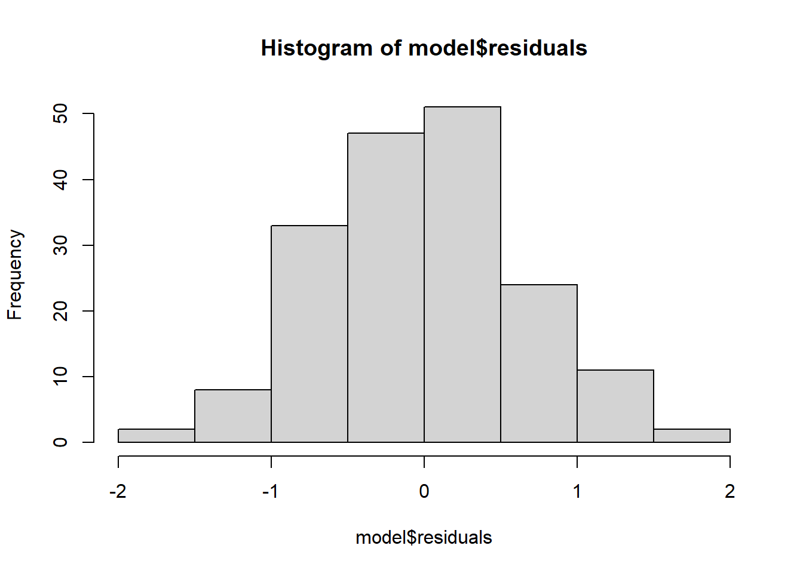
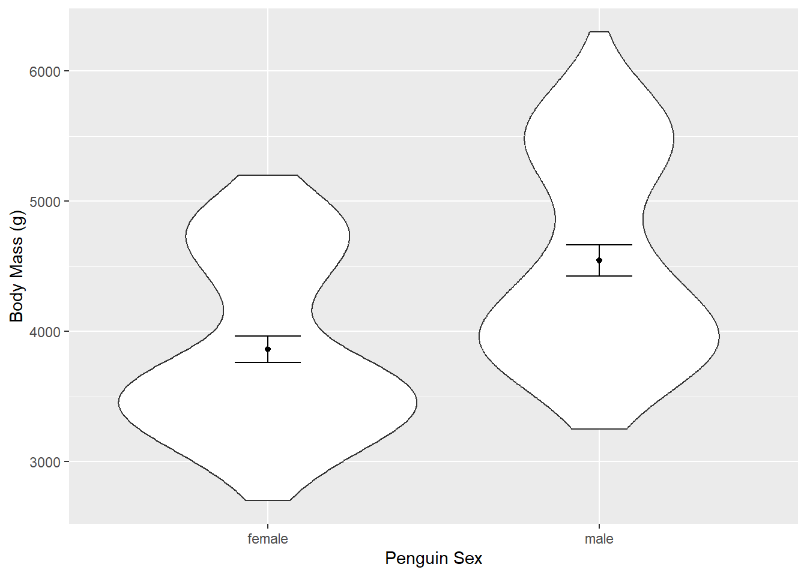

Plant_height <- read.csv(file = "data/Plant_height.csv", header = TRUE)Linear Models
Linear models can be used to run regressions (where the response and predictor are both continuous) or t-tests and ANOVAs (where the response is continuous and the predictor is a factor.)
Continuous Response, Continuous Predictor (Regression)
A regression is just a special case of a linear model, where both the response and predictor variables are continuous.
The relationship between a response (also called dependent) variable \(y\) and one or more predictor variables \(x_{1}\),\(x_{2}\)…\(x_{n}\) is modelled. For example, we could use linear regression to test whether temperature (the predictor variable) effects plant height (the response variable).

Follow this link to a data set on plant heights around the world, Plant_height.csv. Right click to “Save as” in your Rproj data folder and import into R.
It is useful to first visualise our data. For two continuous variables use a scatterplot. loght is log of height. temp is temperature.
library(ggplot2)
ggplot(aes(x = temp, y = loght), data = Plant_height) +
geom_point()
Running the analysis
In R you can fit linear models using the function lm.
lm(loght ~ temp, data = Plant_height)The response variable loght goes before the tilde. After the tilde we list the predictor variables, only temp in this case.
The data = argument specifies the data frame from which the variables will be taken.
To obtain detailed output (e.g., coefficient values, R2, test statistics, p-values, confidence intervals etc.), assign the output of the lm function to a new object in R. Then pass that new model object through the summary function.
model <- lm(loght ~ temp, data = Plant_height)
summary(model)
Call:
lm(formula = loght ~ temp, data = Plant_height)
Residuals:
Min 1Q Median 3Q Max
-1.97903 -0.42804 -0.00918 0.43200 1.79893
Coefficients:
Estimate Std. Error t value Pr(>|t|)
(Intercept) -0.225665 0.103776 -2.175 0.031 *
temp 0.042414 0.005593 7.583 1.87e-12 ***
---
Signif. codes: 0 '***' 0.001 '**' 0.01 '*' 0.05 '.' 0.1 ' ' 1
Residual standard error: 0.6848 on 176 degrees of freedom
Multiple R-squared: 0.2463, Adjusted R-squared: 0.242
F-statistic: 57.5 on 1 and 176 DF, p-value: 1.868e-12What has lm just done?
It has tried to make a line of best fit (the blue line in the graph).

The equation for that line is in the form \[y = \alpha + \beta x \]
\(\alpha\) is the intercept (where the line crosses the y axis). \(\beta\) is the slope. (This is the same as the equation for a straight line y = mx + c or y = ax + b you may have encountered before.)
The goal of lm is to obtain the best estimates for \(\alpha\) and \(\beta\). \(\alpha\) and \(\beta\) are called the model coefficients.
To make it a model rather than just a straight line, it also has an extra bit called the error term \(\varepsilon\). You can think of this as how close the points are to the line. \(\varepsilon\) is not usually reported as part of the equation. \[y = \alpha + \beta x + \varepsilon \]
Interpreting the results
The output given by summary() gives us the \(\beta\) and \(\alpha\) coefficients so we can report the model equation \[log(plant height) = -0.22566 +0.0421.temperature + \varepsilon \]
Look at the output to find where these numbers came from.
Passing the model object through summary() also gives us the t-statistics and p-values related to each predictor. These test the null hypothesis that the true value for the coefficient is 0.
For the intercept we usually don’t care if it is zero or not, but for the other coefficient (the slope), a value significantly differing from zero indicates that there is an association between that predictor and the response. In this example, temperature affects plant height.
Whilst the t-statistics and p-values indicate a significant association, the strength of the association is captured by the R2 value. R2 is the proportion of variance in the response that is explained by the predictor(s).
The F-statistic and associated p-value indicates whether the model as a whole is significant. The model will always be significant if any of the coefficients are significant. With only one predictor variable, the probability associated with the t test, that tests whether the slope differs from zero, is identical to the probability associated with the F statistic.
We can also obtain 95% confidence intervals for the two parameters. Checking that the intervals for the slope do not include zero is another way of showing that there is an association between the dependent and predictor variable.
confint(model) 2.5 % 97.5 %
(Intercept) -0.43047074 -0.02085828
temp 0.03137508 0.05345215In summary, you could report
The model (log(plant height) = -0.22566 + 0.0421.temperature, R2 = 0.246) was significant (F1,176 = 57.5, p < 0.001) with temperature significantly predicting (t = 7.583, p < 0.001) the height of the plants. This means that when temperature increases by 1 degree the plant height increases by 0.042 (CI 0.031, 0.053).
If you have run several analyses (or if there is more than one predictor), it may be useful to present the results as a table with coefficient values, standard errors and p-values for each explanatory variable. What parts you choose to report is down to discipline, style of the journal or what the writer thinks should be emphasised to answer the results question.
Assumptions to check
But to have confidence in our results we should check the data met the assumptions.
Independence. For all the data in these examples we’ll assume the observations are independent of each other.
Linearity. There is no point trying to fit a straight line to data that are curved!
Passing model through plot() gives four graphs. The first is a plot of residuals versus fitted values. Curvilinear relationships produce patterns in such plots.
plot(model)The absence of strong patterning in the first plot indicates the assumption of linearity is valid.
Click here to see what patterns of residuals you would expect with curved relationships
Constant variance If the plot of residuals versus fitted values is fan-shaped, the assumption of constant variance (homogeneity of variance) is violated.
Normality. Checks of whether the data are normally distributed are usually performed by either plotting a histogram of the residuals or via a quantile plot where the residuals are plotted against the values expected from a normal distribution (the second of the figures obtained by plot(model)). If the points in the quantile plot lie mostly on the line, the residuals are normally distributed.
hist(model$residuals) # Histogram of residuals
plot(model, which = 2) # Quantile plotProblems with variance or normality can be addressed via transformations or by using a Generalised Linear Model, GLM. Note, however, that linear regression is reasonably robust against violations of constant variance and normality.
Continuous Response, One Predictor with Two Categories (t test)
This is the same as running a t-test.
We could test if a sample of pH measurements from one river, A, differs from a sample of pH measurements from a second river, B. Save the data River_pH.csv in the data file in your Rproj.
River_pH <- read.csv(file = "data/River_pH.csv", header = TRUE)Visualising data
We could plot a boxplot or bar chart with overlayed points. An alternative is a violin plot using geom_violin.
ggplot(aes(x = River_name, y = pH), data = River_pH) +
geom_violin()Overlay the means and their 95% confidence intervals using stat_summary(). Change the axis labels using xlab() and ylab().
ggplot(aes(x = River_name, y = pH), data = River_pH) +
geom_violin() +
stat_summary(fun = "mean", size = 0.2) +
stat_summary(fun.data = "mean_cl_normal", geom = "errorbar", width = 0.2) +
xlab("River") +
ylab("pH of River")fun and fun.data explained
fun and fun.data are arguments in stat_summary() that do statistical operations to data. fun takes the data and returns a single value such as the mean. fun.data calculates three values for each group: y, ymin and ymax. In our case, ymin is the lower confidence interval and ymax is the upper confidence interval.
Challenge
Read in the Palmer Penguins dataset (penguins.csv). Make a violin plot of body_weight_g for the two groups in sex.
Can you search the internet to find out how to remove NA values?
Solution
Read in the data
penguins <- read.csv(file = "data/penguins.csv")Make a violin plot with mean, error bars, and axes labels.
ggplot(aes(x = sex, y = body_mass_g), data = penguins) +
geom_violin() +
stat_summary(fun = "mean", size = 0.2) +
stat_summary(fun.data = "mean_cl_normal", geom = "errorbar", width = 0.2) +
xlab("Penguin Sex") +
ylab("Body Mass (g)")One solution (of many) to remove NA values is piping the data into the drop_na() function from the tidyr package. The resulting data can be piped into ggplot.
library(tidyr)
penguins %>%
drop_na(sex) %>%
ggplot(aes(x = sex, y = body_mass_g)) +
geom_violin() +
stat_summary(fun = "mean", size = 0.2) +
stat_summary(fun.data = "mean_cl_normal", geom = "errorbar", width = 0.2) +
xlab("Penguin Sex") +
ylab("Body Mass (g)")
Fitting a model
As the previous example, use lm() and then put the resulting model through summary().
model <- lm(pH ~ River_name, data = River_pH)
summary(model)lm() has used the same equation but since our predictor is a factor/category oppose to numeric, how we interpret the results is different.
There are two groups - A and B. One is taken by the model as the baseline (A), the other as the contrast (B). The first level alphabetically is chosen by R as the baseline.
The intercept in the output is the estimated mean for the baseline, i.e. for River A. The B estimate is the estimated mean difference in pH between River A and B. We can therefore write the equation for this model as:
\[pH = 8.6615 -2.2529 \times x\] where \(x = 1\) if the river is river B or \(x = 0\) if it is the baseline river A.
We could report: There is a significant difference in pH between river A (mean = 8.66) and river B (mean = 6.41; t = -6.98, p < 0.001).
Are these results the same as running a t test?
Yes! Same t and p values.
t.test(pH ~ River_name, data = River_pH, var.equal = TRUE)
Two Sample t-test
data: pH by River_name
t = 6.9788, df = 18, p-value = 1.618e-06
alternative hypothesis: true difference in means between group A and group B is not equal to 0
95 percent confidence interval:
1.574706 2.931168
sample estimates:
mean in group A mean in group B
8.661497 6.408560 Challenge
Run a model and report if there is an effect of sex on the body_mass_g of penguins.
Solution
model <- lm(body_mass_g ~ sex, data = penguins)
summary(model)There is a significant effect of sex on penguin body mass with males larger (mean = 4545.68g) than females (mean = 3862.27g; t = 8.54, p < 0.001).
Challenge
Check the assumptions of the penguin sex model using plot.
Do you think it meets the assumptions?
Solution
plot(model)A linear relationship is not relevant here as the predictor is categorical not numeric. Something is wrong with the normality of the residuals. This would alert us to some other variable effecting the data - in this case penguin species. The variance might be greater in males than females.
Continuous Response, One Predictor with Three or More Categories (ANOVA)
For this example, compare hatching times of turtle eggs (continuous response) incubated at four different temperatures - 15°C, 20°C, 25°C and 30°C (categorical predictor with four levels).
The model fits four numbers to describe the mean response of each temperature (rather than just a single intercept and single slope in a simple linear regression).
Equation
For this example, our linear model equation will have this form:
\[HatchingTime = \mu + \beta_1.Temp_{15} + \beta_2.Temp_{20} + \beta_3.Temp_{25} + \beta_4.Temp_{30} + \varepsilon\] Where \[\mu\] is the overall mean. \[\beta\] are the numbers (coefficients) for each of the temperatures.
Running the analysis
Save the turtle hatching data, Turtles.csv, import into R and check the temperature variable is a factor with the str function.
Turtles <- read.csv(file = "data/Turtles.csv", header = TRUE)
str(Turtles)'data.frame': 40 obs. of 2 variables:
$ Temperature: int 15 15 15 15 15 15 15 15 15 15 ...
$ Days : int 37 43 45 54 56 65 62 73 74 75 ...R is treating Temperature as a numeric (int means integer). We need to change that variable to become a factor (categories).
Turtles$Temperature <- factor(Turtles$Temperature)Now run the model using lm.
turtle_model <- lm(Days ~ Temperature, data = Turtles)
summary(turtle_model)
Call:
lm(formula = Days ~ Temperature, data = Turtles)
Residuals:
Min 1Q Median 3Q Max
-28.200 -9.225 1.650 9.025 19.400
Coefficients:
Estimate Std. Error t value Pr(>|t|)
(Intercept) 58.400 4.092 14.273 < 2e-16 ***
Temperature20 -13.800 5.787 -2.385 0.0225 *
Temperature25 -9.200 5.787 -1.590 0.1206
Temperature30 -38.300 5.787 -6.619 1.04e-07 ***
---
Signif. codes: 0 '***' 0.001 '**' 0.01 '*' 0.05 '.' 0.1 ' ' 1
Residual standard error: 12.94 on 36 degrees of freedom
Multiple R-squared: 0.5711, Adjusted R-squared: 0.5354
F-statistic: 15.98 on 3 and 36 DF, p-value: 9.082e-07If we thought we needed a post hoc test we could pass our model object through emmeans() from emmeans package.
library(emmeans)
emmeans(turtle_model, pairwise ~ Temperature)$emmeans
Temperature emmean SE df lower.CL upper.CL
15 58.4 4.09 36 50.1 66.7
20 44.6 4.09 36 36.3 52.9
25 49.2 4.09 36 40.9 57.5
30 20.1 4.09 36 11.8 28.4
Confidence level used: 0.95
$contrasts
contrast estimate SE df t.ratio p.value
Temperature15 - Temperature20 13.8 5.79 36 2.385 0.0983
Temperature15 - Temperature25 9.2 5.79 36 1.590 0.3970
Temperature15 - Temperature30 38.3 5.79 36 6.619 <.0001
Temperature20 - Temperature25 -4.6 5.79 36 -0.795 0.8563
Temperature20 - Temperature30 24.5 5.79 36 4.234 0.0008
Temperature25 - Temperature30 29.1 5.79 36 5.029 0.0001
P value adjustment: tukey method for comparing a family of 4 estimates Assumptions to check
plot(turtle_model)

hist(turtle_model$residuals)
Remember: the first graph produced by plot(), tells us about homogeneity of variance (equal variance). Look for an even spread of the residuals on the y axis for each of the levels on the x axis.
The second plot and the histogram from hist() tells us about normality.
Interpreting the results
Challenge
Given the output, write out how you could report these results. There will be many ways.
Hint: Look at how we reported the examples before. Look at how a paper in your discipline reported results. Look at how ANOVA is reported.
Challenge
Run a lm model to test the effect of penguin species on body_mass_g. Report the results.
Turtle_aov <- aov(Days ~ Temperature, data = Turtles)
summary(Turtle_aov) Df Sum Sq Mean Sq F value Pr(>F)
Temperature 3 8025 2675.2 15.98 9.08e-07 ***
Residuals 36 6027 167.4
---
Signif. codes: 0 '***' 0.001 '**' 0.01 '*' 0.05 '.' 0.1 ' ' 1TukeyHSD(Turtle_aov) Tukey multiple comparisons of means
95% family-wise confidence level
Fit: aov(formula = Days ~ Temperature, data = Turtles)
$Temperature
diff lwr upr p adj
20-15 -13.8 -29.38469 1.784689 0.0982694
25-15 -9.2 -24.78469 6.384689 0.3969971
30-15 -38.3 -53.88469 -22.715311 0.0000006
25-20 4.6 -10.98469 20.184689 0.8562615
30-20 -24.5 -40.08469 -8.915311 0.0008384
30-25 -29.1 -44.68469 -13.515311 0.0000785Generalised Linear Models
If you understand general linear models then you can understand more complex generalised linear models. General linear models are used when the response (dependent) is continuous. Whereas generalised linear models are used when the response variable is not continuous but binary or count or proportional data.
Generalised linear models need link functions. In simple terms, these vary with the type of data the response is and dictate how the generalised linear model is fitted. For example, for binomial data the link function is logit() and for count data it’s log(). We specify the link function using the argument family = within the glm().
Binomial Response

Save this crabs.csv and read into R. The CrabPres column is whether a crab was present in that area of the beach surveyed. This response variable is binomial: the presence or absence of a crab.
crabs <- read.csv("data/crabs.csv", header = T)We use the functions str and table to check the type of data. Plus how many levels there are in the variables.
str(crabs)
table(crabs$Dist) # shows n for each level too
table(crabs$Time)
table(crabs$CrabPres)We can make sure R thinks Time is a factor.
crabs$Time <- factor(crabs$Time)Running the analysis
We can fit a model to test whether the probability of crab presence changes with time (a factor) and distance (a continuous variable).
The response variable (presence/absence of crabs) is binomial, so we use family=binomial in the glm.
crab_glm <- glm(CrabPres ~ Time * Dist, family = "binomial", data = crabs)Assumptions to check
Assumption - There is a straight line relationship between the logit function of the mean of \(y\) and the predictors \(x\)
For this assumption, we check the residual plot for non-linearity, or a U-shape.
plot(crab_glm, which = 1)
Unfortunately, passing the glm object through the plot function gives us a very odd looking plot due to the discreteness of the data (i.e., many points on top of each other).
For a more useful plot we can instead fit the model using the manyglm() function in the mvabund package.
library(mvabund)
crab_manyglm <- manyglm(CrabPres ~ Time * Dist, family = "binomial", data = crabs)
plot(crab_manyglm)
In our case there is no evidence of non-linearity.
If the residuals seem to go down then up, or up then down, we may need to add a polynomial function of the predictors using the poly function.
Interpreting the results
For binomial models in particular the p-values from the summary function are not reliable, and we prefer to use the anova function to see if predictors are significant.
summary(crab_glm)
Call:
glm(formula = CrabPres ~ Time * Dist, family = "binomial", data = crabs)
Coefficients:
Estimate Std. Error z value Pr(>|z|)
(Intercept) -1.71431 0.68664 -2.497 0.0125 *
Time10 1.29173 0.87194 1.481 0.1385
Dist 0.02522 0.11137 0.226 0.8208
Time10:Dist 0.05715 0.14149 0.404 0.6863
---
Signif. codes: 0 '***' 0.001 '**' 0.01 '*' 0.05 '.' 0.1 ' ' 1
(Dispersion parameter for binomial family taken to be 1)
Null deviance: 71.097 on 56 degrees of freedom
Residual deviance: 63.466 on 53 degrees of freedom
AIC: 71.466
Number of Fisher Scoring iterations: 4anova(crab_glm, test = "Chisq")Analysis of Deviance Table
Model: binomial, link: logit
Response: CrabPres
Terms added sequentially (first to last)
Df Deviance Resid. Df Resid. Dev Pr(>Chi)
NULL 56 71.097
Time 1 6.6701 55 64.427 0.009804 **
Dist 1 0.7955 54 63.631 0.372448
Time:Dist 1 0.1647 53 63.466 0.684852
---
Signif. codes: 0 '***' 0.001 '**' 0.01 '*' 0.05 '.' 0.1 ' ' 1The p-value for Time is P<0.01 so we conclude there is an effect of time on the presence of crabs, but no effect of distance or interaction between time and distance.
anova results
When there is more than one predictor, the maths ANOVA uses can be done in three different ways. These ways are named type I, II and III. This R bloggers article explains the differences.
Our crab example is approximately balanced (even sample numbers in each group) so whatever version of ANOVA R uses we’ll get the same results. However, if you have unbalanced data you could compare differences among type I, II and III ANOVAs using the function Anova() in the car package.
anova(lm_model) # default is type 1
car::Anova(lm_model, type = 2)
car::Anova(lm_model, type = 3)Optimising the model
When there is more than one predictor you can try reducing the model by removing predictors and comparing models. We can use a number called the AIC to compare. Lower AICs are better.
step(crab_glm, test = "Chi")Start: AIC=71.47
CrabPres ~ Time * Dist
Df Deviance AIC LRT Pr(>Chi)
- Time:Dist 1 63.631 69.631 0.16472 0.6849
<none> 63.466 71.466
Step: AIC=69.63
CrabPres ~ Time + Dist
Df Deviance AIC LRT Pr(>Chi)
- Dist 1 64.427 68.427 0.7955 0.37245
<none> 63.631 69.631
- Time 1 70.275 74.275 6.6438 0.00995 **
---
Signif. codes: 0 '***' 0.001 '**' 0.01 '*' 0.05 '.' 0.1 ' ' 1
Step: AIC=68.43
CrabPres ~ Time
Df Deviance AIC LRT Pr(>Chi)
<none> 64.427 68.427
- Time 1 71.097 73.097 6.6701 0.009804 **
---
Signif. codes: 0 '***' 0.001 '**' 0.01 '*' 0.05 '.' 0.1 ' ' 1
Call: glm(formula = CrabPres ~ Time, family = "binomial", data = crabs)
Coefficients:
(Intercept) Time10
-1.609 1.535
Degrees of Freedom: 56 Total (i.e. Null); 55 Residual
Null Deviance: 71.1
Residual Deviance: 64.43 AIC: 68.43step() removes the interaction (Dist * Time), then Dist and the AIC improves (gets lower). This confirms they are not predictors of the response.
Communicating the results
You can use the p values to report results like in other tests, e.g., “There is strong evidence that the presence of crabs varies with time (p = 0.01).” For multiple predictors it’s best to display the results in a table.
The coefficients for the intercept is the value of the response variable (on a logit scale) when the factor predictors (Time in our example) is the baseline (time point 5 in our example) and the numeric predictors (Dist) is 0. The coefficient for Time (a factor) tells us the difference in the response between the baseline and the other group of the factor (the difference between time point 5 and time point 10).
The coefficients for numeric predictors can show negative or positive relationships with the response.
The coefficient numbers (called log odds) are difficult for you (and your readers) to interpret. Many people convert them into effect sizes called odds ratios to report them.
exp(coef(crab_glm)) # calculates the exponential of the coefficients in the model i.e. turns log odds into odds ratios(Intercept) Time10 Dist Time10:Dist
0.1800871 3.6390656 1.0255455 1.0588183 Odds ratios above 1 mean crabs are more likely to be present (present is coded as 1 in the response CrabPres). Odds ratios below 1 mean crabs are less likely to be present.
The odds ratio for Time is 3.6. We report “Crabs are 3.6 times more likely to be present at time point 10 compared to time point 5”.
For numeric predictors a positive odds ratio such as 3.21 would mean that a 1 unit increase in the predictor, increases the odds of the response being present by 3.21. However, our odds ratio for distance is negative which is more difficult to put into words and relate back to the research question. One solution is to express it as the % decrease. For example, (0.97–1) * 100 = -3%. Then we can write “Each additional increase of one in distance is associated with an 3% decrease in the odds of a crab being present.
Challenge
What plots do you think could be used to present this data?
Count Response
Running the analysis

This example has counts of different animal groups at control sites and sites where bush regeneration has been carried out (treatment). We will use only one group of animals - slugs (Soleolifera is the order name of terrestrial slugs) to see if the the bush regeneration activities have affected slug abundance.
Save revegetation.csv and import into R and view the data.
reveg <- read.csv("data/revegetation.csv", header = T)If you view the frequency histogram of the slug counts, you will see that it is very skewed, with many small values and few large counts.
hist(reveg$Soleolifera)We can use a GLM to test whether the counts of slugs (from the order Soleolifera) differ between control and regenerated sites. To fit the GLM, we will use the manyglm function instead of glm so we have access to more useful residual plots.
To fit the GLM, load the mvabund package then fit the following model:
library(mvabund)
slug_glm <- manyglm(Soleolifera ~ Treatment, family = "poisson", data = reveg)Treatment is the predictor variable with two levels, control and revegetated.
Assumptions to check
Before looking at the results, look at the residual plot to check the assumptions.
plot(slug_glm)It’s hard to say whether there is any non-linearity in this plot, this is because the predictor is binary (control vs revegetated).
Looking at the mean-variance assumption, it does appear as though there is a fan shape. The residuals are more spread out on the right than the left - we call this overdispersion.
This tells us the mean-variance assumption of the Poisson is probably violated. We should try a different distribution. We can instead fit a negative-binomial distribution in manyglm by changing the family argument to family="negative binomial".
slug_glm2 <- manyglm(Soleolifera ~ Treatment, family = "negative binomial", data = reveg)Look again at the residual plot:
plot(slug_glm2)
This seems to have improved the residual plot. There is no longer a strong fan shape, so we can go ahead and look at the results.
Interpreting the results
We can use summary and anova.
anova(slug_glm2)Time elapsed: 0 hr 0 min 0 secAnalysis of Deviance Table
Model: Soleolifera ~ Treatment
Multivariate test:
Res.Df Df.diff Dev Pr(>Dev)
(Intercept) 48
Treatment 47 1 10.52 0.004 **
---
Signif. codes: 0 '***' 0.001 '**' 0.01 '*' 0.05 '.' 0.1 ' ' 1
Arguments: P-value calculated using 999 iterations via PIT-trap resampling.summary(slug_glm2)
Test statistics:
wald value Pr(>wald)
(Intercept) 1.502 0.030 *
TreatmentRevegetated 3.307 0.001 ***
---
Signif. codes: 0 '***' 0.001 '**' 0.01 '*' 0.05 '.' 0.1 ' ' 1
Test statistic: 3.307, p-value: 0.001
Arguments: P-value calculated using 999 resampling iterations via pit.trap resampling.Both tests indicate treatment has an effect (p<0.01).
Communicating the results
You could write “There is strong evidence of a positive effect of bush regeneration on the abundance of slugs from the order Soleolifera (p < 0.01)”. For multiple predictors it’s best to display the results in a table.
You should also indicate which distribution was used (e.g. negative-binomial) and if resampling was used. “We used a negative-binomial generalised linear model due to overdispersion evident in the data. Bootstrap resampling was used with 1000 resamples” (1000 is the default when using manyglm()).
Challenge
What graph could be used to visualise the differences in slug counts between control and revegetated sites.
Solution
There are various solutions. Boxplot is one.
boxplot(Soleolifera ~ Treatment, ylab = "Count", xlab = "Treatment", data = reveg)
Adapted from EnvironmentalComputing and Herman et al., 2021 Statistical Analysis for Public Health: Simple linear regression